초록 (Abstract)
행동 복제(Behavioral cloning)는 관측값이 주어졌을 때 전문가의 행동을 예측하도록 판별 모델을 학습시킴으로써 정책 학습을 지도 학습으로 단순화한다. 이러한 판별 모델은 비인과적(non-causal)이다. 즉, 학습 과정에서 전문가와 환경 간의 상호작용에 대한 인과 구조를 인지하지 못한다. 우리는 모방 학습에서의 분포 변화(distributional shift) 때문에 인과관계를 무시하는 것이 특히 치명적이라는 점을 지적한다. 특히, 이는 더 많은 정보에 접근할 수 있을 때 오히려 더 나쁜 성능을 보일 수 있다는 직관에 반하는 "인과적 오식별(causal misidentification)" 현상을 초래한다. 우리는 이 문제가 어떻게 발생하는지 조사하고, 올바른 인과 모델을 결정하기 위해 환경과의 상호작용 또는 전문가 질의와 같은 표적 개입(targeted intervention)을 통해 이를 해결하는 솔루션을 제안한다. 우리는 인과적 오식별이 여러 벤치마크 제어 도메인뿐만 아니라 실제적인 운전 환경에서도 발생함을 보이고, DAgger 및 기타 베이스라인과 아블레이션(ablation) 연구를 통해 제안한 솔루션을 검증한다.
1 서론 (Introduction)
모방 학습(Imitation learning)은 인간 전문가가 제공한 예시 시연으로부터 제어 정책을 직접 학습할 수 있게 해준다. 구현이 간단하며, 학습 과정에서 환경과의 광범위한 상호작용에 대한 필요성을 줄이거나 없애준다 [58, 41, 4, 1, 20].
그러나 모방 학습은 근본적인 문제인 분포 변화(distributional shift) [9, 42]를 겪는다. 학습 및 테스트 상태 분포가 서로 다르며, 이는 각각 전문가 정책과 학습된 정책에 의해 유도된다. 따라서 전문가 궤적 위에서 전문가의 행동을 모방하는 것은 실제 작업 목표와 일치하지 않을 수 있다. 이 문제는 널리 알려져 있지만 [41, 9, 42, 43], 세심한 엔지니어링을 거친 단순한 행동 복제 방식은 여러 실제적인 문제에서 좋은 결과를 보여주었다 [58, 41, 44, 36, 37, 4, 33, 3]. 이는 다음과 같은 의문을 제기한다: 분포 변화는 정말로 여전히 문제인가?
본 논문에서 우리는 분포 변화의 다소 놀랍고 매우 문제가 되는 영향인 "인과적 오식별(causal misidentification)"을 규명한다. 시연 데이터셋에서 전문가 행동의 상관관계가 있는 변수와 실제 원인을 구별하는 것은 대개 매우 어렵지만, (지도 학습에서 가정하듯이) 학습 분포와 테스트 분포가 동일할 때는 방해 상관관계(nuisance correlates)가 테스트 세트에서도 계속 유지되므로 부정적인 영향 없이 무시될 수 있다. 그러나 모방 학습에서는 분포 변화로 인해 이것이 치명적인 문제를 일으킬 수 있다. 이는 순차적 행동의 인과 구조에 의해 더욱 악화된다. 즉, 현재의 행동이 미래의 관측을 유발한다는 바로 그 사실이 종종 복잡하고 새로운 방해 상관관계를 도입하기 때문이다.
이를 설명하기 위해, 자동차를 운전하도록 신경망을 학습시키는 행동 복제를 생각해 보자. 시나리오 A에서 모델의 입력은 대시보드와 앞유리 이미지이고, 시나리오 B에서 모델(동일한 아키텍처)의 입력은 대시보드가 가려진 동일한 이미지이다(그림 1 참조). 두 복제된 정책 모두 낮은 학습 손실을 달성하지만, 도로에서 테스트할 때 모델 B는 운전을 잘하는 반면 모델 A는 그렇지 못한다. 그 이유는 대시보드에 브레이크를 밟을 때 즉시 켜지는 표시등이 있고, 모델 A는 브레이크 표시등이 켜져 있을 때만 브레이크를 밟도록 잘못 학습하기 때문이다. 브레이크 표시등은 제동의 결과(effect)임에도 불구하고, 모델 A는 이를 원인으로 오식별(misidentifying)함으로써 낮은 학습 오차를 달성할 수 있었던 것이다.
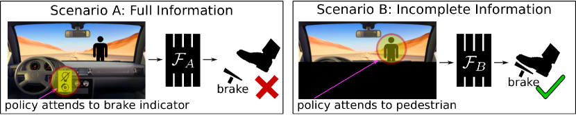
이 상황은 인과적 오식별의 명백한 징후를 보여준다: 분포 변화가 존재할 때 더 많은 정보에 접근하는 것이 오히려 더 나쁜 일반화 성능으로 이어진다는 것이다. 인과적 오식별은 자연스러운 모방 학습 환경에서 흔히 발생하며, 특히 모방자의 입력에 과거 이력 정보가 포함될 때 더욱 그렇다.
본 논문에서 우리는 먼저 모방 학습에서의 인과적 오식별 문제를 지적하고 조사한다. 그런 다음, 복잡한 심층 신경망 정책을 사용할 때도 올바른 인과 모델을 학습하여 이를 극복하는 솔루션을 제안한다. 우리는 인과 그래프에서 정책으로의 매핑을 학습한 다음, 전문가에게 질의하거나 환경에서 선택된 정책을 실행함으로써 올바른 정책을 효율적으로 탐색하기 위해 표적 개입을 사용한다.
2 관련 연구 (Related Work)
모방 학습. 행동 복제를 통한 모방 학습은 Widrow와 Smith, 1964년 [58]로 거슬러 올라가며, 오늘날까지 계속해서 인기를 얻고 있다 [41, 44, 36, 37, 4, 13, 33, 56, 3]. 자율 실행 중에 복제된 정책이 낯선 상태를 마주하는 분포 변화 문제는 모방 학습에서 주요 쟁점으로 확인되어 왔다 [41, 9, 42, 43, 25, 19, 3]. 이는 자신의 과거 상태에 직접 또는 간접적으로 접근할 수 있는 일반적인 머신러닝 시스템에서의 "피드백" 문제와 밀접하게 연관되어 있다 [47, 2]. 모방 학습의 경우, 분포 변화를 극복하기 위해 중간에 복제된 정책이 마주한 상태를 기반으로 전문가에게 반복적으로 질의하는 것에 의존하는 다양한 해결책이 제안되었으며 [9, 42, 43], 그중 DAgger [43]가 가장 널리 사용되는 해결책이 되었다.
우리는 그림 1에 도식적으로 나타난 바와 같이, 모방 학습에서의 분포 변화 문제가 종종 인과적 오식별로 인해 발생한다는 증거를 제시한다. 우리는 분포 변화를 극복하기 위해 진정한 인과 모델을 학습하도록 상태에 대한 표적 개입을 통해 이 문제를 해결할 것을 제안한다. 우리가 보여주듯이, 이러한 개입은 추가적인 전문가의 참여가 없는 환경적 보상의 형태를 취하거나, 추가 입력을 제공할 전문가가 있는 경우에는 전문가 질의의 형태를 취할 수 있다. 전문가 질의 모드에서 우리의 접근법은 DAgger [43]와 직접 비교될 수 있다. 실제로 우리는 DAgger보다 수십 배 적은 질의를 사용하여 인과적 오식별을 성공적으로 해결함을 보여준다.
우리는 또한 Bansal et al. [3]과 비교한다: 모방자가 과거 행동을 그대로 복사하는 것을 방지하기 위해, 그들은 과거 행동을 드러낼 수 있는 차원에 드롭아웃(dropout) [53]을 적용하여 학습시킨다. 우리의 접근법이 그래프로 매개변수화된 정책들의 혼합에서 실제 인과 그래프를 찾고자 하는 반면, 드롭아웃은 혼합 정책을 직접 적용하는 것에 해당한다. 실험에서 우리의 접근법이 훨씬 더 나은 성능을 보인다.
인과 추론. 인과 추론(Causal inference)은 변수들 사이의 인과 관계를 추론하는 일반적인 문제이다 [52, 38, 40, 50, 10, 51]. "인과 발견(Causal discovery)" 접근법은 제약 조건 하에서 사전에 기록된 관측값으로부터 인과 추론을 가능하게 한다 [54, 17, 29, 15, 30, 31, 26, 14, 34, 57]. 관측에 기반한 인과 추론은 일반적으로 불가능한 것으로 알려져 있다 [38, 39]. 우리는 사용자가 관심 있는 변수의 일부 하위 집합에 값을 할당하고 시스템의 나머지 부분에 미치는 영향을 관찰함으로써 인과 구조를 발견하기 위해 "실험"을 할 수 있는 개입적 체계(interventional regime) [55, 11, 49, 48]에서 작동한다. 우리는 모방 학습에 적합한 새로운 개입적 인과 추론 접근법을 제안한다. 인과 구조를 무시하는 것이 모방 학습에서 특히 문제가 되지만, 우리가 알기로는 우리의 연구가 이를 직접적으로 다룬 최초의 시도이다.
3 인과적 오식별 현상 (The Phenomenon of Causal Misidentification)
모방 학습에서 전문가는 에이전트의 이익을 위해 작업(예: 자동차 운전)을 수행하는 방법을 시연한다. 각 시연에서 에이전트는 매 시간 , 에서의 차원 상태 관측값(예: 카메라의 비디오 피드)과 전문가의 행동 (예: 조향, 가속, 제동) 모두에 접근할 수 있다. 행동 복제 접근법은 시연의 모든 튜플을 사용하여 에서 으로의 매핑 을 학습한다. 테스트 시에 에이전트는 을 관찰하고 를 실행한다.
기저의 순차적 의사결정 과정은 그림 2에 나타난 바와 같이 복잡한 인과 구조를 가진다. 상태는 미래의 전문가 행동에 영향을 미치며, 동시에 과거의 행동과 상태로부터 스스로 영향을 받는다.
특히, 전문가의 행동 은 상태 의 일부 정보에 의해 영향을 받고, 나머지 정보에는 영향을 받지 않는다. 우선, 의 차원 가 서로 분리된 변동 요인(disentangled factors of variation)을 나타낸다고 가정하자. 그러면 이러한 요인들 중 알려지지 않은 일부 하위 집합("원인")이 전문가 행동에 영향을 미치고, 나머지는 영향을 미치지 않는다("교란 변수(nuisance variables)"). 혼재 변수(confounder) 는 의 각 상태 변수에 영향을 미치므로, 시연 데이터의 쌍 중에서 일부 교란 변수가 여전히 과 상관관계를 가질 수 있다. 그림 1에서 계기판의 경고등이 바로 교란 변수이다.
단순한 행동 복제(behavioral cloning) 정책은 행동을 선택하기 위해 교란 상관관계에 의존할 수 있으며, 이는 낮은 훈련 오차를 생성하고 심지어 검증용 쌍에 대해서도 일반화될 수 있다. 그러나 이 정책은 실제로 배포될 때 분포 변화(distributional shift)에 대처해야 한다. 행동 이 전문가가 아닌 모방자에 의해 선택되므로, 와 의 분포에 영향을 미치기 때문이다. 이는 결과적으로 에서 로의 정책 매핑에 영향을 미쳐, 전문가 복제 정책의 성능 저하를 초래한다. 우리는 복제된 정책이 전문가 행동의 원인을 잘못 식별하여 실패하는 현상을 "인과적 오식별(causal misidentification)"로 정의한다.
3.1 모방 학습에서의 강건성과 인과성
직관적으로, 분포 변화는 전문가 행동 과 교란 변수 사이의 관계에는 영향을 미치지만, 실제 원인과의 관계에는 영향을 미치지 않는다. 즉, 분포 변화에 최대한 강건해지기 위해서 정책은 오직 전문가 행동의 실제 원인에만 의존해야 하며, 이를 통해 인과적 오식별을 피해야 한다. 이러한 직관은 기능적 인과 모델(functional causal models, FCM)과 개입(interventions) [38]의 언어로 공식화될 수 있다.
기능적 인과 모델: 변수 집합 에 대한 기능적 인과 모델(FCM)은 에 대한 그래프 와, 각 변수 의 원인들이 어떻게 그 변수를 결정하는지 설명하는 매개변수 를 가진 결정론적 함수 를 포함하는 튜플 이다: 여기서 은 에 미치는 모든 외부적 영향을 나타내는 확률적 노이즈 변수이며, 은 의 원인에 해당하는 부모 노드의 인덱스를 나타낸다.
변수 의 값을 설정하기 위한 "개입(intervention)" 은 이제 이 그래프의 구조적 변화로 표현되어 "절단된 그래프(mutilated graph)" 를 생성할 수 있으며, 이 그래프에서는 으로 들어오는 에지들이 제거된다.111FCM에 대한 더 자세한 개요는 [38]를 참조하라.
이 형식론을 우리의 모방 학습 환경에 적용하면, 상태 의 모든 분포 변화는 에 개입하는 것으로 모델링될 수 있으므로, "개입 질의(interventional query)" 를 올바르게 모델링하는 것만으로도 분포 변화에 대한 강건성을 확보하기에 충분하다. 이제, 실제 원인에만 의존하는 정책만이 분포 변화 하에서 상태로부터 최적/전문가 행동으로의 매핑을 강건하게 모델링할 수 있다는 직관을 공식화할 수 있다.
부록 B에서 우리는 완만한 가정 하에 개입 질의를 올바르게 모델링하는 것이 실제로 올바른 인과 그래프 을 학습하는 것을 요구한다는 것을 증명한다. 자동차 예시에서, 브레이크등을 켜짐 또는 꺼짐으로 "설정"하고 전문가의 행동을 관찰하면 혼재 변수에 의해 방해받지 않는 명확한 신호를 얻을 수 있다. 즉, 브레이크등은 전문가의 제동 행동에 영향을 미치지 않는다.
3.2 정책 학습 벤치마크 및 실제 환경에서의 인과적 오식별
우리의 해결책을 논의하기 전에, 먼저 인과적 오식별이 모방 학습 성능에 부정적인 영향을 미치는 여러 테스트베드와 실제 사례를 제시한다.
제어 벤치마크. 우리는 널리 연구된 벤치마크 제어 작업에 작은 변화를 주는 것만으로도 인과적 오식별이 유도됨을 보여준다. 단순히 상태에 더 많은 정보를 추가하는 것인데, 이는 직관적으로 작업을 더 어렵게 만드는 것이 아니라 더 쉽게 만들어야 하는 것이다. 특히, 우리는 많은 표준 제어 문제의 전문가 데이터에서 현재 행동과 상관관계를 가지는 경향이 있는 이전 행동에 대한 정보를 추가한다. 이는 상태에서 과거 행동의 상관관계를 관찰할 수 있는 자동차 예시와 같은 시나리오의 대리물(proxy)이며, 메모리나 순환(recurrence)과 같은 과거에 대한 다른 정보원으로부터 볼 수 있는 것과 유사하다. 우리는 세 가지 종류의 작업을 연구한다: (i) MountainCar (연속 상태, 이산 행동), (ii) MuJoCo Hopper (연속 상태 및 행동), (iii) Atari 게임: Pong, Enduro, UpNDown (상태: 두 개의 연속된 프레임 스택, 이산 행동).
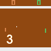
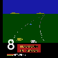
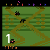
각 작업에 대해 우리는 두 가지 시나리오에서 모방 학습을 연구한다. 시나리오 A(이하 "혼재된(confounded)" 시나리오)에서 정책은 이전 행동을 포함하여 증강된 관측 벡터를 본다. 저차원 관측의 경우, 학습자가 알 수 없는 인덱스에 이전 행동을 포함하도록 상태 벡터가 확장된다. 이미지 관측의 경우, 이미지의 알 수 없는 위치에 이전 행동에 해당하는 기호를 오버레이한다(그림 3 참조). 시나리오 B("원본(original)" 시나리오)에서 저차원 관측의 경우 이전 행동 변수는 무작위 노이즈로 대체된다. 이미지 관측의 경우 원본 이미지는 변경되지 않은 상태로 유지된다. 시연 데이터는 부록 A에 설명된 대로 합성 방식으로 생성된다. 모든 경우에 우리는 정책을 표현하기 위해 동일한 구조의 신경망을 사용하며, 동일한 시연 데이터로 이들을 훈련한다.
그림 4은 MountainCar, Hopper, Pong에 대해 데모 데이터셋 크기 변화에 따른 보상을 보여준다. 부록 E에는 Enduro 및 UpNDown을 포함한 추가 결과가 나와 있다. 모든 정책은 홀드아웃(held-out)된 전문가 상태-행동 튜플에 대해 검증 오차가 거의 0에 가깝도록 학습된다. original은 모방 데이터셋의 크기가 증가함에 따라 전문가 성능에 수렴하는 보상을 생성한다. 반면 confounded는 동등한 성능에 도달하기 위해 훨씬 더 많은 데모를 필요로 하거나, 아예 도달하지 못하고 완전히 실패한다.
전반적으로 결과는 명확하다. 이러한 태스크 전반에 걸쳐 더 많은 정보에 접근하는 것이 오히려 더 열등한 성능으로 이어진다. 부록의 그림 11이 보여주듯이, 이러한 차이는 전문가 데모에 대한 학습/검증 손실의 차이 때문이 아니다. 예를 들어 Pong에서 confounded는 홀드아웃된 데모 샘플에 대해 original보다 더 낮은 검증 손실을 보이지만, 실제로 제어에 사용될 때는 더 낮은 보상을 생성한다. 이러한 결과는 인과적 오인식(causal misidentification)의 존재를 입증할 뿐만 아니라, 잠재적인 해결책을 탐구하기 위한 테스트베드를 제공한다.
실세계 주행 (Real-World Driving). 우리의 테스트베드는 평가의 편의를 위해 "original" 관측 변수에 의도적으로 방해 변수(nuisance variable)를 도입했으나, 기존 연구들의 증거는 흔히 발생하는 실세계 모방 학습 환경에서 잘못된 인과적 귀인(misattribution)이 만연해 있음을 시사한다. 실세계 문제에는 특권을 가진 "original" 관측 공간이 없는 경우가 많으며, 매우 자연스러워 보이는 상태 공간이라도 여전히 방해 요인을 포함할 수 있다. 카메라의 전체 이미지를 사용할 때 인과적 오인식이 발생하는 계기판 경고등 설정(그림 1)이 이에 해당한다.
특히 실세계 주행에서 이력(history)은 상태 공간의 자연스러운 일부로 보이지만, 이전 연구들에서는 순순환/이력 기반 모방이 성능을 저하시키는 현상이 일관되게 관찰되어 왔으며, 이는 명백한 인과적 오인식의 증상을 보여준다 [36, 56, 3]. 이러한 이력 정보는 주행에 유용한 정보를 포함하고 있지만, 동시에 이전 행동과 같은 방해 요인에 대한 정보도 자연스럽게 도입하게 된다. 세 가지 사례 모두에서 더 많은 정보가 행동 복제(behavioral cloning) 정책의 더 나쁜 결과로 이어졌으나, 이는 인과적 오인식 때문으로 구체적으로 규명되지도 않았고 인과론적 접근법을 통해 해결되지도 않았다.
| Metrics | Validation | Driving Performance | ||
|---|---|---|---|---|
| Methods | Perplexity | Distance | Interventions | Collisions |
| history | 0.834 | 144.92 | 2.94 1.79 | 6.49 5.72 |
| no-history | 0.989 | 268.95 | 1.30 0.78 | 3.38 2.55 |
우리는 DAgger에서 영감을 얻은 전문가 섭동(expert perturbation)과 행동 복제를 사용하여, 실사에 가까운 GTA-V [24] 환경에서 주행을 학습한 Wang et al. [56]의 매우 시사점 있는 결과에 주목하고자 한다. 모방 학습 정책은 차량의 과거 자차 위치(ego-position) 궤적에 대한 "이력" 정보가 있는 경우(history)와 없는 경우(no-history)의 오버헤드 이미지 관측을 사용하여 학습된다.
위의 테스트와 유사하게, 두 방법의 아키텍처는 동일하다. 그리고 다시 한번 위의 테스트와 마찬가지로, history는 홀드아웃된 데모 데이터에서 더 나은 성능을 보이지만, 실제로 배포되었을 때는 훨씬 더 나쁜 성능을 보인다. 표 1은 Wang et al. [56]의 표 II에서 재현한 결과를 보여준다. 이러한 결과는 현실적인 모방 학습 환경에서 인과적 오인식이 만연해 있다는 강력한 증거가 된다. Bansal et al. [3] 역시 주행 환경에서 유사한 증상을 관찰하고 이를 해결하기 위해 드롭아웃 [53] 접근법을 제시했으며, 우리는 실험에서 이를 비교한다. 본 연구의 이전 버전 이후, Codevilla et al. [8] 또한 현실적인 주행 환경에서 인과적 혼동(causal confusion)을 검증하고 특정 인과적 혼동 사례를 해결하기 위한 조치를 제안했다.
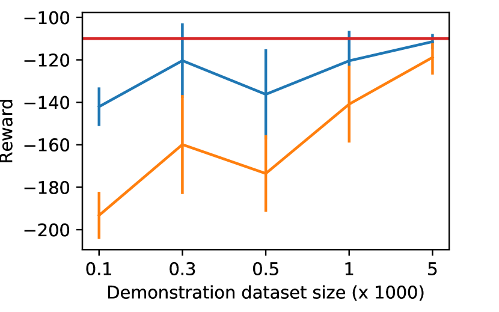
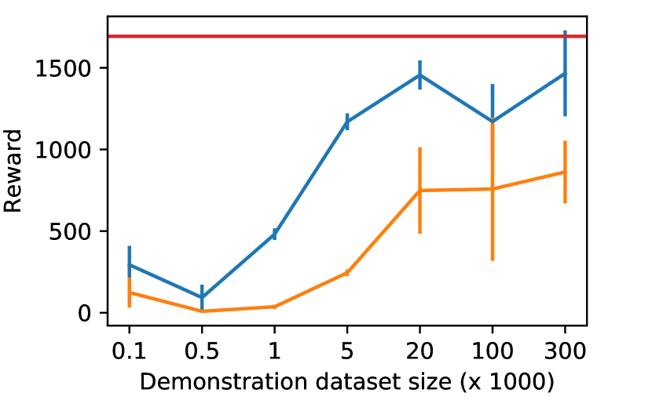
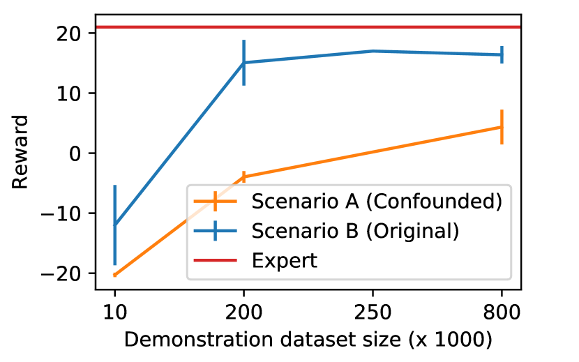
4 인과적 오인식의 해결
섹션 3.1에서 인과적 오인식에 대한 강건성(robustness)은 전문가 행동의 참된 인과 모델을 찾음으로써 달성될 수 있음을 상기하라. 우리는 이를 수행하기 위한 간단한 파이프라인을 제안한다. 먼저, 다양한 인과 그래프에 대응하는 정책들을 공동으로 학습한다 (섹션 4.1). 그런 다음, 올바른 인과 모델에 대한 가설 집합을 효율적으로 탐색하기 위해 표적 개입(targeted intervention)을 수행한다 (섹션 4.2).
4.1 인과 그래프 매개변수화된 정책 학습
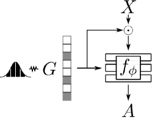
이 단계에서는 각 후보 인과 그래프에 대응하는 정책을 학습한다. 섹션 3에서 전문가의 행동 은 상태 변수 의 알려지지 않은 부분집합에 기반한다는 점을 상기하라. 각 은 원인일 수도 있고 아닐 수도 있으므로, 개의 가능한 그래프가 존재한다. 우리는 인과 그래프의 구조 를 개의 이진 변수 벡터로 매개변수화하며, 각 변수는 그림 2에서 에서 로 가는 화살표의 존재 여부를 나타낸다. 그 후 단일 그래프 매개변수화된 정책 을 학습시키는데, 여기서 은 원소별 곱셈이고 는 연결(concatenation)을 나타낸다. 은 신경망 매개변수이며, 다음을 최소화하도록 경사하강법을 통해 학습된다:
| (1) |
여기서 은 모든 개의 그래프에 대해 균등하게 무작위로 추출되며, 는 연속 행동 환경의 경우 평균 제곱 오차(MSE) 손실이고 이산 행동 환경의 경우 크로스 엔트로피 손실이다. 그림 5은 학습 시 아키텍처의 개요를 보여준다. 관측치 를 행동 로 매핑하는 정책 네트워크 은 정책들의 혼합을 나타내며, 각 정책은 베르누이 무작위 벡터로 샘플링되는 이진 인과 그래프 구조 변수 의 각 값에 대응한다.
부록 D에서 우리는 잠재 변수 모델을 사용하여 기능적 인과 모델(functional causal model, FCM; 그래프 및 관련 매개변수)에 대한 분포를 추론함으로써, 그래프 에 대해 변분 베이지안 인과 발견(variational Bayesian causal discovery)을 수행하는 방법을 제안한다. 이 분포의 최빈값(mode)은 데모 데이터와 가장 일치하는 FCM들이다. 이는 균등 샘플링 대신 학습 데모에 잘 맞는 FCM에서 그래프를 우선적으로 샘플링한다는 점을 제외하면 위의 방식과 유사하다. 우리는 섹션 5에서 두 접근법을 비교하며, 다음 단계인 표적 개입을 준비하는 데 있어 단순한 균등 샘플링으로도 거의 항상 충분하다는 것을 확인한다.
4.2 목표 지향적 개입 (Targeted Intervention)
4.1절에서처럼 그래프 매개변수화된 정책을 학습한 후, 각 인과 그래프 구조 가설 의 우도(likelihood) 를 계산하기 위한 목표 지향적 개입을 제안한다. 어떤 의미에서 모방 학습은 개입적 인과 학습을 연구하기에 이상적인 환경을 제공한다. 인과적 오식별은 명확한 문제를 제기하는 반면, 에이전트가 세상과 상호작용할 수 있는 순차적 의사결정 프로세스에 문제가 위치한다는 사실은 제한된 개입을 수행하기 위한 자연스러운 메커니즘을 제공하기 때문이다.
우리는 두 가지 개입 모드를 제안하며, 두 모드 모두 행동을 통해 환경과 상호작용함으로써 수행될 수 있다.
전문가 질의 모드. 이는 모방 학습에 적용되는 표준적인 개입 접근 방식이다. 즉, 에 개입하여 값을 할당하고 전문가의 반응 을 관찰한다. 이를 위해 각 개입 에피소드의 시작 부분에서 그래프 를 샘플링하고 정책 를 실행한다. 이러한 방식으로 데이터가 수집되면 흥미로운 상태에 대한 전문가 레이블을 도출한다. 이는 DAgger [42]에서와 같이 대화형 전문가를 필요로 하지만, 다음과 같은 이유로 DAgger보다 훨씬 적은 전문가 질의를 필요로 한다. (i) 질의는 상대적으로 작은 유효 FCM 집합 중에서 모호성을 해소하는 역할만 하며, (ii) 능동 학습(active learning) 접근 방식에서 전문가에게 효율적으로 질의하기 위해 의 정책 혼합 간의 불일치를 사용하기 때문이다. 이 접근 방식은 알고리즘 1에 요약되어 있다.
정책 실행 모드. 전문가에게 질의하는 것이 항상 가능한 것은 아니다. 예를 들어, 인간 운전자를 관찰하여 운전을 배우는 학습자의 경우, 학습자가 훈련 중간 단계에서 마주칠 수 있는 위험한 시나리오에 인간 운전자를 처하게 하는 것은 불가능할 수 있다. 이처럼 사전 녹화된 데모만으로 학습하고자 하는 경우, 환경적 리턴(에피소드 동안 시간에 따른 보상의 합) 을 사용하여 간접적으로 개입할 것을 제안한다. 서로 다른 가설 에 해당하는 정책 들이 환경에서 실행되고 리턴 이 수집된다. 각 그래프의 우도는 지수화된 리턴 에 비례한다. 직관은 간단하다. 전문가에게 질의할 수 없는 경우에도 환경적 리턴에는 최적의 전문가 정책에 대한 정보가 포함되어 있다는 것이다. 표준 강화 학습에서처럼 타임스텝별 보상에 접근할 수 있다고 가정하지도 않으며, 단지 완료된 각 실행에 대한 보상의 합만 필요하다는 점에 주목하라. 따라서 이 개입 모드는 훨씬 더 유연하다. 알고리즘 2를 참조하라.
위의 두 가지 개입 접근 방식 모두 개별 가설을 독립적으로 평가하지만, 가설의 수는 상태 변수의 수에 따라 기하급수적으로 증가한다는 점에 유의하라. 더 큰 상태를 처리하기 위해, 선형 에너지 을 갖는 에너지 기반 모델을 가정하여 그래프 분포 를 추론한다. 따라서 그래프 분포는 가 되며, 여기서 은 독립적인 인자로 인수분해되는 시그모이드(sigmoid)이다. 우리의 접근 방식은 를 반환하기 전에 최빈값(mode)으로 축소하고 축소된 분포는 항상 독립적이므로 독립성 가정은 합리적이다. 는 우도에 대한 선형 회귀로부터 추론된다. 이 과정은 알고리즘 1과 2에 묘사되어 있다. 위의 방법은 강화 학습 프레임워크 [27] 내에서 정형화될 수 있다. 부록 H에서 보여주듯이, 에너지 기반 모델은 소프트 Q-학습(soft Q-learning) [16]의 일종으로 볼 수 있다.
4.3 관측치의 얽힘 해제 (Disentangling Observations)
위에서는 얽힘이 해제된 관측치(disentangled observations) 에 접근할 수 있다고 가정했다. 이미지 관측치와 같이 그렇지 않은 경우, 은 시간 에서의 관측치의 얽힘이 해제된 표현(disentangled representation)으로 설정되어야 한다. 우리는 원래 관측치를 재구성하도록 -VAE [22, 18]를 훈련하여 이러한 표현을 구축한다. 전문가가 마주한 상태 이외의 상태를 포착하기 위해, 전문가 궤적과 무작위 궤적 상태를 혼합하여 훈련한다. 일단 훈련되면, 는 인코더의 출력에서 생성된 잠재 분포(latent distribution)의 평균으로 설정된다. VAE 훈련 목적 함수는 잠재 공간에서 차원 간의 얽힘 해제를 장려한다 [5, 6]. 우리는 인코더와 디코더 아키텍처 모두에 CoordConv [28]를 채택한다.
5 실험 (Experiments)
We now evaluate the solution described in Sec 4 on the five tasks (MountainCar, Hopper, and 3 Atari games) described in Sec 3.2. In particular, recall that confounded performed significantly worse than original across all tasks. In our experiments, we seek to answer the following questions: (1) Does our targeted intervention-based solution to causal misidentification bridge the gap between confounded and original? (2) How quickly does performance improve with intervention? (3) Do both intervention modes (expert query, policy execution) described in Sec 4.2 resolve causal misidentification? (4) Does our approach in fact recover the true causal graph? (5) Are disentangled state representations necessary?
In each of the two intervention modes, we compare two variants of our method: unif-intervention and disc-intervention. They only differ in the training of the graph-parameterized mixture-of-policies —while unif-intervention samples causal graphs uniformly, disc-intervention uses the variational causal discovery approach mentioned in Sec 4.1, and described in detail in Appendix D.
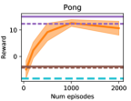
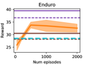
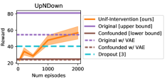
베이스라인. 우리는 혼재된 상태(confounded state)에 적용된 세 가지 베이스라인과 우리 방법을 비교한다. dropout은 식 1을 사용하여 정책을 훈련하고 모두 1로 구성된 그래프 로 평가하는데, 이는 Bansal et al. [3]에서 제안한 바와 같이 훈련 중 드롭아웃 규제화(dropout regularization) [53]를 적용하는 것과 같다. dagger [42]는 모방자가 마주한 상태에 대해 전문가에게 질의함으로써 분포 변화(distributional shift) 문제를 해결하며, 대화형 전문가를 필요로 한다. 우리는 dagger를 우리의 전문가 질의 개입 접근 방식과 비교한다. 마지막으로, 생성적 적대 모방 학습(gail) [19]과 비교한다. gail은 표준 행동 복제(behavioral cloning)의 대안으로, 데모 궤적을 환경에서의 롤아웃 동안 모방자가 생성한 궤적과 일치시킴으로써 작동한다. 수동적 관측 데이터로부터 인과 발견에 흔히 사용되는 PC 알고리즘 [26]은 충실성(faithfulness) 가정에 의존하므로, 부록 C에서 설명한 바와 같이 우리의 설정에서는 실행 불가능하다는 점에 유의하라. 자세한 내용은 부록 B 및 D를 참조하라.
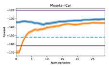
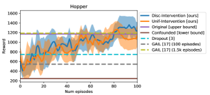
정책 실행에 의한 개입. 그림 7은 MountainCar 및 Hopper에 대해 정책 실행 개입 에피소드 수에 따른 에피소드 보상을 나타낸다. 보상은 알고리즘 2에 설명된 대로 각 에피소드 후에 업데이트되는 그래프에 대한 사후 분포의 현재 최빈값 에 항상 대응한다. 이러한 경우, unif-intervention과 disc-intervention 모두 결국 유사한 보상을 생성하는 모델로 수렴하며, 이는 올바른 인과 모델(즉, 참인 원인은 선택되고 방해 상관관계는 제외됨)임을 확인했다. MountainCar의 초기 에피소드에서 disc-intervention은 변분 인과 발견 단계에서 추론된 그래프에 대한 사전 분포(prior)의 이점을 얻는다. 그러나 Hopper에서는 더 단순한 unif-intervention도 마찬가지로 우수한 성능을 보인다. Bansal et al. [3]에서 보고된 바와 같이 dropout은 두 설정 모두에서 실제로 도움이 되지만, 우리 방법의 변형들보다 성능이 현저히 떨어진다. gail은 단 수십 에피소드만 필요한 우리 방법의 성능과 일치하기 위해 Hopper에서 약 1,500 에피소드가 필요하다. 부록 G에서 gail의 성능을 추가로 분석한다. gail의 표준 구현은 이산 행동 공간을 처리하지 못하므로 MountainCar에서는 평가하지 않는다.
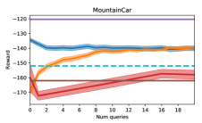
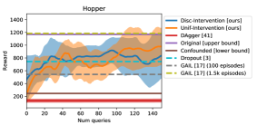
Sec 4.3에서 설명한 바와 같이, 우리는 VAE를 사용하여 Atari 게임의 이미지 상태를 얽힘 해제(disentangle)함으로써 Pong과 Enduro에 대해서는 30차원 표현을, UpNDown에 대해서는 50차원 표현을 생성한다. 우리는 시각적으로 평가했을 때 여전히 좋은 재구성을 생성하면서도 가능한 한 작게 이 차원을 휴리스틱하게 설정했다. 정책이 엔드투엔드(end-to-end) 학습 없이 VAE 표현을 활용하도록 요구하는 것은 Fig 6에서 볼 수 있듯이 약간의 성능 저하를 초래한다. 그러나 인과적 오식별(causal misidentification)은 기준이 되는 VAE 성능에 비해서도 여전히 매우 큰 성능 저하를 일으킨다. disc-intervention은 상태의 기수(cardinality)가 증가함에 따라 학습하기 어렵고, Hopper(14차원 상태)에서 미미한 이점만 제공하므로 이러한 Atari 실험에서는 이를 생략한다. Fig 6가 보여주듯이, 세 가지 경우 모두에서 unif-intervention은 confounded w/ vae에 비해 확실히 크게 개선되어 Pong과 UpNDown에서 original w/ vae와 일치하는 반면, dropout 베이스라인은 UpNDown만 개선한다. 지금까지의 실험에서 gail은 Atari 환경 중 어느 곳에서도 무작위 선택(chance-level) 이상의 성능으로 수렴하지 못했다. 이러한 결과는 우리의 방법이 비교적 적은 횟수의 시도 내에서 인과적 오식별을 성공적으로 완화함을 보여준다.
전문가 질의를 통한 개입. 다음으로, 서로 다른 인과 그래프에 의해 생성된 궤적의 샘플에 대해 전문가에게 질의함으로써 직접적인 개입을 수행한다. 이 설정에서는 dagger [43]와도 직접 비교할 수 있다. Fig 8은 MountainCar와 Hopper에서의 결과를 보여준다. 우리의 두 접근법 모두 적은 수의 질의 내에서 confounded에 비해 성공적으로 개선된다. 위에서 보고된 정책 실행 개입 결과와 일치하게, 우리의 접근법이 두 작업 모두에서 실제 인과 모델을 다시 올바르게 식별하고 두 설정 모두에서 dropout보다 더 나은 성능을 보임을 확인한다. 또한 훨씬 더 적은 전문가 질의를 사용하면서도 dagger가 달성한 보상을 초과한다. 부록 F에서 우리는 dagger가 MountainCar에서 유사한 보상을 달성하기 위해 수백 개의 질의가 필요하고 Hopper에서는 수만 개가 필요함을 보여준다. 마지막으로, 1.5k 에피소드를 사용한 gail은 우리의 전문가 질의 개입 접근법보다 우수한 성능을 보인다. 그러나 Fig 8에서 알 수 있듯이, 이는 우리의 정책 개입 접근법에 필요한 에피소드 수보다 한 자릿수(order of magnitude) 더 많은 양이다.
다시 한번 말하지만, disc-intervention은 MountainCar의 초기 개입에서만 도움이 되며, Hopper에서는 전혀 도움이 되지 않는다. 따라서 우리 방법의 성능은 주로 표적 개입(targeted intervention) 단계 덕분이며, 정책 혼합을 학습하는 데 사용되는 접근법의 정확한 선택은 상대적으로 중요하지 않다.
전반적으로 두 가지 개입 접근법 중에서 정책 실행이 더 나은 최종 보상으로 수렴한다. 실제로 Atari 환경의 경우 전문가 질의 개입이 효과적이지 않음을 관찰했다. 우리는 이것이 전문가의 합의가 실제 환경 보상을 완벽하게 대변하지 못하기 때문이라고 생각한다.
학습된 인과 그래프 해석하기. 우리의 방법은 프레임의 VAE 인코딩의 각 차원을 원인 또는 방해(nuisance) 변수로 분류한다. Fig 9에서 우리는 Pong 환경에서의 이러한 추론을 다음과 같이 분석한다. 맨 위 줄에서는 프레임이 VAE 잠재 공간으로 인코딩된 다음, (우리의 접근법 unif-intervention에 의해 추론된) 모든 방해 차원에 대해 해당 차원이 사전 분포(prior)의 샘플로 대체되고 새로운 샘플이 생성된다. 맨 아래 줄에서는 추론된 그래프만큼 많은 방해 변수를 가진 무작위 그래프를 사용하여 동일한 절차가 적용된다. 맨 위 줄에서는 인과 변수(공과 패들)가 샘플 간에 공유되는 반면, 방해 변수(숫자)는 서로 달라 무작위 숫자나 읽을 수 없는 숫자로 대체됨을 관찰할 수 있다. 맨 아래 줄에서는 인과 변수가 크게 달라지며, 이는 상태의 중요한 측면이 방해 변수로 판단되었음을 나타낸다. 이는 MountainCar 및 Hopper와 일치하게 우리의 접근법이 Pong에서 실제 원인을 실제로 식별함을 입증한다.
| Mode | Representation | Reward |
|---|---|---|
| Policy execution | Disentangled | -137 |
| Entangled | -145 | |
| Expert queries | Disentangled | -140 |
| Entangled | -165 |
얽힘 해제의 필요성. 우리의 개입 방법은 상태의 얽힘이 해제된 표현(disentangled representation)을 가정한다. 그렇지 않으면 상태의 개 개별 차원 각각이 원인과 방해 변수를 모두 포착할 수 있으며, 실제 원인을 발견하는 문제는 더 이상 개의 그래프를 탐색하는 것으로 환원될 수 없다.
이를 실험적으로 테스트하기 위해, 우리는 과거 행동이 추가된 3차원 상태 벡터가 고정된 무작위 회전에 의해 회전되는 MountainCar confounded 테스트베드의 변형을 만든다. 얽힌 상태와 얽힘 해제된 confounded 상태에서 그래프 조건부 정책을 학습시키고, 30 에피소드의 정책 실행 개입 또는 20개의 전문가 질의를 적용한 후 Tab 2에 표시된 결과를 얻는다. 결과는 얽힘 해제된(회전되지 않은) 설정에서보다 얽힌 설정에서 유의미하게 낮으며, 이는 우리 접근법의 효과성에 얽힘 해제가 중요함을 나타낸다.
6 결론
우리는 모방 학습에서 자연스럽게 발생하며 근본적인 문제인 "인과적 오식별"을 규명하고, 이를 해결하기 위한 인과론적 접근법을 제안했다. 실제 모방 학습 환경에서 발생하는 인과적 오식별의 증거를 관찰하는 한편, 우리는 지금까지 이를 모방하기 위해 고안된 다소 단순한 합성 환경에서 솔루션을 검증했다. 이러한 현실적인 시나리오에서 작동하도록 솔루션을 확장하는 것은 향후 연구를 위한 흥미로운 방향이다. 마지막으로, 모방 외에도 실제 세계에 배포된 일반적인 머신러닝 시스템 역시 "피드백" [47, 2]에 직면하며, 이는 인과적 오식별의 가능성을 열어준다. 우리는 향후 이러한 더 일반적인 설정을 다루고자 한다.
감사의 글:
프로젝트 초기 단계에서 이전 연구에 대한 정보를 제공해 준 Karthikeyan Shanmugam과 Shane Gu에게 감사드리며, 프로젝트의 다양한 단계에서 유익한 토론을 나누어 준 Yang Gao, Abhishek Gupta, Marvin Zhang, Alyosha Efros, Roberto Calandra에게 감사드린다. 또한 이 논문의 초기 초안에 대해 유용한 피드백을 준 Drew Bagnell과 Katerina Fragkiadaki에게도 감사를 표한다. 이 프로젝트는 Berkeley DeepDrive, NVIDIA, Google의 지원을 부분적으로 받았다.
References
- Argall et al. [2009] Brenna D Argall, Sonia Chernova, Manuela Veloso, and Brett Browning. A survey of robot learning from demonstration. Robotics and autonomous systems, 57(5):469–483, 2009.
- Bagnell [2016] Drew Bagnell. Talk: Feedback in machine learning, 2016. URL https://youtu.be/XRSvz4UOpo4.
- Bansal et al. [2019] Mayank Bansal, Alex Krizhevsky, and Abhijit Ogale. ChauffeurNet: Learning to drive by imitating the best and synthesizing the worst. Robotics: Science & Systems (RSS), 2019.
- Bojarski et al. [2016] Mariusz Bojarski, Davide Del Testa, Daniel Dworakowski, Bernhard Firner, Beat Flepp, Prasoon Goyal, Lawrence D Jackel, Mathew Monfort, Urs Muller, Jiakai Zhang, et al. End to end learning for self-driving cars. arXiv preprint arXiv:1604.07316, 2016.
- Burgess et al. [2018] Christopher P Burgess, Irina Higgins, Arka Pal, Loic Matthey, Nick Watters, Guillaume Desjardins, and Alexander Lerchner. Understanding disentangling in -vae. arXiv preprint arXiv:1804.03599, 2018.
- Chen et al. [2018] Tian Qi Chen, Xuechen Li, Roger Grosse, and David Duvenaud. Isolating sources of disentanglement in variational autoencoders. arXiv preprint arXiv:1802.04942, 2018.
- Chen et al. [2016] Xi Chen, Yan Duan, Rein Houthooft, John Schulman, Ilya Sutskever, and Pieter Abbeel. Infogan: Interpretable representation learning by information maximizing generative adversarial nets. In Advances in neural information processing systems, pages 2172–2180, 2016.
- Codevilla et al. [2019] Felipe Codevilla, Eder Santana, Antonio M López, and Adrien Gaidon. Exploring the limitations of behavior cloning for autonomous driving. International Conference on Computer Vision(ICCV), 2019.
- Daumé et al. [2009] Hal Daumé, John Langford, and Daniel Marcu. Search-based structured prediction. Machine learning, 75(3):297–325, 2009.
- Eberhardt [2017] Frederick Eberhardt. Introduction to the foundations of causal discovery. International Journal of Data Science and Analytics, 3(2):81–91, 2017.
- Eberhardt and Scheines [2007] Frederick Eberhardt and Richard Scheines. Interventions and causal inference. Philosophy of Science, 74(5):981–995, 2007.
- Gao et al. [2017] Weihao Gao, Sreeram Kannan, Sewoong Oh, and Pramod Viswanath. Estimating mutual information for discrete-continuous mixtures. In Advances in neural information processing systems, pages 5986–5997, 2017.
- Giusti et al. [2016] Alessandro Giusti, Jerome Guzzi, Dan Ciresan, Fang-Lin He, Juan Pablo Rodriguez, Flavio Fontana, Matthias Faessler, Christian Forster, Jurgen Schmidhuber, Gianni Di Caro, Davide Scaramuzza, and Luca Gambardella. A machine learning approach to visual perception of forest trails for mobile robots. IEEE Robotics and Automation Letters, 2016.
- Goudet et al. [2017] Olivier Goudet, Diviyan Kalainathan, Philippe Caillou, David Lopez-Paz, Isabelle Guyon, Michele Sebag, Aris Tritas, and Paola Tubaro. Learning functional causal models with generative neural networks. arXiv preprint arXiv:1709.05321, 2017.
- Guyon et al. [2008] Isabelle Guyon, Constantin Aliferis, Greg Cooper, André Elisseeff, Jean-Philippe Pellet, Peter Spirtes, and Alexander Statnikov. Design and analysis of the causation and prediction challenge. In Causation and Prediction Challenge, pages 1–33, 2008.
- Haarnoja et al. [2017] Tuomas Haarnoja, Haoran Tang, Pieter Abbeel, and Sergey Levine. Reinforcement learning with deep energy-based policies. arXiv preprint arXiv:1702.08165, 2017.
- Heckerman et al. [2006] David Heckerman, Christopher Meek, and Gregory Cooper. A Bayesian Approach to Causal Discovery, pages 1–28. Springer Berlin Heidelberg, Berlin, Heidelberg, 2006. ISBN 978-3-540-33486-6. doi: 10.1007/3-540-33486-6_1. URL https://doi.org/10.1007/3-540-33486-6_1.
- Higgins et al. [2017] Irina Higgins, Loic Matthey, Arka Pal, Christopher Burgess, Xavier Glorot, Matthew Botvinick, Shakir Mohamed, and Alexander Lerchner. beta-vae: Learning basic visual concepts with a constrained variational framework. ICLR, 2017.
- Ho and Ermon [2016] Jonathan Ho and Stefano Ermon. Generative adversarial imitation learning. In Advances in Neural Information Processing Systems, pages 4565–4573, 2016.
- Hussein et al. [2017] Ahmed Hussein, Mohamed Medhat Gaber, Eyad Elyan, and Chrisina Jayne. Imitation learning: A survey of learning methods. ACM Computing Surveys (CSUR), 50(2):21, 2017.
- Jang et al. [2016] Eric Jang, Shixiang Gu, and Ben Poole. Categorical reparameterization with gumbel-softmax. arXiv preprint arXiv:1611.01144, 2016.
- Kingma and Welling [2013] Diederik P Kingma and Max Welling. Auto-encoding variational bayes. arXiv preprint arXiv:1312.6114, 2013.
- Kingma et al. [2015] Diederik P Kingma, Tim Salimans, and Max Welling. Variational dropout and the local reparameterization trick. In C. Cortes, N. D. Lawrence, D. D. Lee, M. Sugiyama, and R. Garnett, editors, Advances in Neural Information Processing Systems 28, pages 2575–2583. Curran Associates, Inc., 2015.
- Krähenbühl [2018] Philipp Krähenbühl. Free supervision from video games. In Proceedings of the IEEE Conference on Computer Vision and Pattern Recognition, pages 2955–2964, 2018.
- Laskey et al. [2017] Michael Laskey, Jonathan Lee, Roy Fox, Anca Dragan, and Ken Goldberg. Dart: Noise injection for robust imitation learning. arXiv preprint arXiv:1703.09327, 2017.
- Le et al. [2016] Thuc Le, Tao Hoang, Jiuyong Li, Lin Liu, Huawen Liu, and Shu Hu. A fast pc algorithm for high dimensional causal discovery with multi-core pcs. IEEE/ACM transactions on computational biology and bioinformatics, 2016.
- Levine [2018] Sergey Levine. Reinforcement learning and control as probabilistic inference: Tutorial and review. CoRR, abs/1805.00909, 2018.
- Liu et al. [2018] Rosanne Liu, Joel Lehman, Piero Molino, Felipe Petroski Such, Eric Frank, Alex Sergeev, and Jason Yosinski. An intriguing failing of convolutional neural networks and the coordconv solution. CoRR, abs/1807.03247, 2018. URL http://arxiv.org/abs/1807.03247.
- Lopez-Paz et al. [2017] D. Lopez-Paz, R. Nishihara, S. Chintala, B. Schölkopf, and L. Bottou. Discovering causal signals in images. In Proceedings IEEE Conference on Computer Vision and Pattern Recognition (CVPR) 2017, pages 58–66, Piscataway, NJ, USA, July 2017. IEEE.
- Louizos et al. [2017] Christos Louizos, Uri Shalit, Joris M Mooij, David Sontag, Richard Zemel, and Max Welling. Causal effect inference with deep latent-variable models. In Advances in Neural Information Processing Systems, pages 6446–6456, 2017.
- Maathuis et al. [2010] Marloes H Maathuis, Diego Colombo, Markus Kalisch, and Peter Bühlmann. Predicting causal effects in large-scale systems from observational data. Nature Methods, 7(4):247, 2010.
- Maddison et al. [2016] Chris J Maddison, Andriy Mnih, and Yee Whye Teh. The concrete distribution: A continuous relaxation of discrete random variables. arXiv preprint arXiv:1611.00712, 2016.
- Mahler and Goldberg [2017] Jeffrey Mahler and Ken Goldberg. Learning deep policies for robot bin picking by simulating robust grasping sequences. In Conference on Robot Learning, pages 515–524, 2017.
- Mitrovic et al. [2018] Jovana Mitrovic, Dino Sejdinovic, and Yee Whye Teh. Causal inference via kernel deviance measures. In Advances in Neural Information Processing Systems, pages 6986–6994, 2018.
- Mnih et al. [2013] Volodymyr Mnih, Koray Kavukcuoglu, David Silver, Alex Graves, Ioannis Antonoglou, Daan Wierstra, and Martin Riedmiller. Playing atari with deep reinforcement learning. arXiv preprint arXiv:1312.5602, 2013.
- Muller et al. [2006] Urs Muller, Jan Ben, Eric Cosatto, Beat Flepp, and Yann L Cun. Off-road obstacle avoidance through end-to-end learning. In Advances in neural information processing systems, pages 739–746, 2006.
- Mülling et al. [2013] Katharina Mülling, Jens Kober, Oliver Kroemer, and Jan Peters. Learning to select and generalize striking movements in robot table tennis. The International Journal of Robotics Research, 32(3):263–279, 2013.
- Pearl [2009] Judea Pearl. Causality. Cambridge university press, 2009.
- Peters et al. [2014] Jonas Peters, Joris M Mooij, Dominik Janzing, and Bernhard Schölkopf. Causal discovery with continuous additive noise models. The Journal of Machine Learning Research, 15(1):2009–2053, 2014.
- Peters et al. [2017] Jonas Peters, Dominik Janzing, and Bernhard Schölkopf. Elements of causal inference: foundations and learning algorithms. MIT press, 2017.
- Pomerleau [1989] Dean A Pomerleau. Alvinn: An autonomous land vehicle in a neural network. In Advances in neural information processing systems, pages 305–313, 1989.
- Ross and Bagnell [2010] Stéphane Ross and Drew Bagnell. Efficient reductions for imitation learning. In Proceedings of the thirteenth international conference on artificial intelligence and statistics, pages 661–668, 2010.
- Ross et al. [2011] Stéphane Ross, Geoffrey Gordon, and Drew Bagnell. A reduction of imitation learning and structured prediction to no-regret online learning. In Proceedings of the fourteenth international conference on artificial intelligence and statistics, pages 627–635, 2011.
- Schaal [1999] Stefan Schaal. Is imitation learning the route to humanoid robots? Trends in cognitive sciences, 3(6):233–242, 1999.
- Schulman et al. [2015] John Schulman, Sergey Levine, Pieter Abbeel, Michael Jordan, and Philipp Moritz. Trust region policy optimization. In International Conference on Machine Learning, pages 1889–1897, 2015.
- Schulman et al. [2017] John Schulman, Filip Wolski, Prafulla Dhariwal, Alec Radford, and Oleg Klimov. Proximal policy optimization algorithms. arXiv preprint arXiv:1707.06347, 2017.
- Sculley et al. [2015] David Sculley, Gary Holt, Daniel Golovin, Eugene Davydov, Todd Phillips, Dietmar Ebner, Vinay Chaudhary, Michael Young, Jean-Francois Crespo, and Dan Dennison. Hidden technical debt in machine learning systems. In Advances in neural information processing systems, pages 2503–2511, 2015.
- Sen et al. [2017] Rajat Sen, Karthikeyan Shanmugam, Alexandres G Dimakis, and Sanjay Shakkottai. Identifying best interventions through online importance sampling. In Proceedings of the 34th International Conference on Machine Learning-Volume 70, pages 3057–3066, 2017.
- Shanmugam et al. [2015] Karthikeyan Shanmugam, Murat Kocaoglu, Alexandros G Dimakis, and Sriram Vishwanath. Learning causal graphs with small interventions. In Advances in Neural Information Processing Systems, pages 3195–3203, 2015.
- Spirtes [2010] Peter Spirtes. Introduction to causal inference. Journal of Machine Learning Research, 11(May):1643–1662, 2010.
- Spirtes and Zhang [2016] Peter Spirtes and Kun Zhang. Causal discovery and inference: concepts and recent methodological advances. In Applied informatics, 2016.
- Spirtes et al. [2000] Peter Spirtes, Clark N Glymour, Richard Scheines, David Heckerman, Christopher Meek, Gregory Cooper, and Thomas Richardson. Causation, prediction, and search. MIT press, 2000.
- Srivastava et al. [2014] Nitish Srivastava, Geoffrey Hinton, Alex Krizhevsky, Ilya Sutskever, and Ruslan Salakhutdinov. Dropout: a simple way to prevent neural networks from overfitting. The Journal of Machine Learning Research, 15(1):1929–1958, 2014.
- Steyvers et al. [2003] Mark Steyvers, Joshua B Tenenbaum, Eric-Jan Wagenmakers, and Ben Blum. Inferring causal networks from observations and interventions. Cognitive science, 27(3):453–489, 2003.
- Tong and Koller [2001] Simon Tong and Daphne Koller. Active learning for structure in bayesian networks. In IJCAI, 2001.
- Wang et al. [2019] Dequan Wang, Coline Devin, Qi-Zhi Cai, Philipp Krähenbühl, and Trevor Darrell. Monocular plan view networks for autonomous driving. IROS, 2019.
- Wang and Blei [2018] Yixin Wang and David M Blei. The blessings of multiple causes. arXiv preprint arXiv:1805.06826, 2018.
- Widrow and Smith [1964] Bernard Widrow and Fred W Smith. Pattern-recognizing control systems, 1964.
부록 A 전문가 시연
부록 B 올바른 인과 모델의 필요성
충실성(Faithfulness): 분포의 모든 조건부 독립 관계가 그래프에 표현될 때 인과 모델이 충실하다고 한다.
우리는 Sec 3.1에서 사용된 표기법을 따르지만, 표기법의 단순성을 위해 여러 타임스텝에 대해 추론하지 않을 때는 , , 에 대한 시간 첨자를 생략한다.
명제 1.
전문가의 함수형 인과 모델을 이라 하고, 인과 그래프는 그림 2와 같은 , 함수 매개변수는 이라 하자. 개입 질의(interventional query)에 동의하는 어떤 충실한 학습자(faithful learner) 가 존재한다고 가정한다:
그러면 반드시 이어야 한다.222동일한 시점의 상태와 행동을 논할 때는 윗첨자에서 시간 을 생략한다.
증명.
그래프 에 대해, 절단된 그래프(mutilated graph) 에서 행동과 독립적인 상태 변수들의 인덱스 집합을 다음과 같이 정의한다:
일치하는 개입 질의 가정과 충실성(faithfulness) 가정으로부터 다음이 도출된다: . 그래프로부터 우리는 이며 따라서 임을 관찰할 수 있다. ∎
부록 C 수동적 인과 발견, 충실성 및 결정론
| (cause) | 0.377 | 0.013 |
|---|---|---|
| (cause) | 0.707 | 0.019 |
| (nuisance) | 0.654 | 0.027 |
많은 학습 시나리오에서 인과 모델에 대한 많은 정보는 이미 데이터를 통해 수동적으로 추론될 수 있다. 이것이 인과 발견(causal discovery)의 문제이다. 이상적으로는 시연 데이터의 그림 2에 있는 무작위 변수들에 대해 통계적 분석을 수행하여 변수 이 전문가의 다음 행동 의 원인인지 아니면 방해 변수(nuisance variable)인지를 결정할 수 있게 해준다.
PC 알고리즘 [52]과 같은 인과 발견 알고리즘은 관측된 데이터에서 일련의 조건부 독립 관계를 테스트하고, 조건부 독립 관계가 데이터와 일치하는 가능한 인과 그래프들의 집합을 구성한다. 이는 무작위 변수들의 결합 확률이 인과 그래프보다 더 많은 조건부 독립 관계를 포함하지 않는다는 것을 의미하는 충실성(faithfulness)을 가정함으로써 수행된다. 그림 2의 인과 모델의 특정 사례에서, 가 의 원인이고 따라서 화살표 가 존재하는 것은 인 경우, 즉 을 이미 알고 있을 때 이 에 대한 추가 정보를 제공하는 경우에만 성립함을 쉽게 알 수 있다.
우리는 Gao et al. [12]의 추정기를 사용하여 혼란을 야기하는 MountainCar 벤치마크에 대한 상호 정보량 을 평가함으로써 이 절차를 실증적으로 테스트한다. 표 3의 결과는 모든 상태 변수가 전문가의 행동과 상관관계가 있지만, 혼란 변수(confounder) 이 주어지면 모두 거의 독립적이 된다는 것을 보여주며, 이는 어느 것도 원인이 아님을 의미한다.
MountainCar 사례에서 중요한 충실성 가정이 위배되었기 때문에 수동적 인과 발견은 실패했다. 상태 변수 이 과거 의 결정론적 함수일 때마다 항상 가 성립하며, 수동적 발견 알고리즘은 화살표 이 존재하지 않는다고 결론을 내린다. 상태의 적어도 일부분에 대한 이러한 결정론적 전이 함수는 실제 모방 학습 시나리오에서 매우 흔하게 나타나며, 이로 인해 수동적 인과 발견을 적용할 수 없게 만든다. 따라서 인과 모델을 결정하기 위해서는 능동적인 개입(active intervention)이 사용되어야 한다.
부록 D 변분 인과 발견
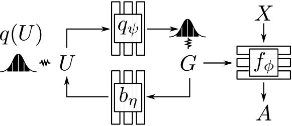
수동적으로 관측된 데이터로부터 인과 그래프를 발견하는 문제를 인과 발견이라고 한다. PC 알고리즘 [52]은 단연 가장 널리 사용되고 쉽게 구현할 수 있는 인과 발견 알고리즘이다. 그림 2의 경우, 조건부 독립 관계 이 성립하면 PC 알고리즘은 화살표 의 부재를 의미할 것이며, 이는 상호 정보량을 측정함으로써 테스트할 수 있다. 그러나 PC 알고리즘은 인과 그래프의 충실성(faithfulness)에 의존한다. 즉, 조건부 독립은 그래프에서의 d-분리(d-separation)를 의미해야 한다. 그러나 충실성은 마르코프 결정 과정(MDP)에서 쉽게 위배된다. 만약 어떤 에 대해 가 전문가 행동 의 원인이고(화살표 이 존재해야 함), 이 의 결정론적 함수의 결과라면, 항상 이 성립하여 PC 알고리즘은 화살표 이 존재하지 않는다고 잘못 결론 내릴 것이다.33보다 일반적으로, 충실성은 전문가 그래프에 강력한 제약을 가한다. 예를 들어, 시각적 상태는 그림 1의 차량 프레임과 같이 변하지 않는 요소를 포함할 수 있으며, 이는 정의상 과거의 결정론적 함수이다. 또 다른 예로, 목표 조건부(goal-conditioned) 작업은 매 시점마다 상태 변수에 일정한 목표를 포함해야 하며, 이 또한 결정론적 전이를 가지므로 충실성을 위배한다.
우리는 시연으로부터 인과 발견 [17]을 수행하기 위해 베이지안 접근법을 취한다. 섹션 3에서 전문가의 행동 는 상태 변수 의 알려지지 않은 부분 집합에 기반한다는 점을 상기하자. 각 는 원인일 수도 있고 아닐 수도 있으므로, 개의 가능한 그래프가 존재한다. 이제 우리는 함수형 인과 모델(그래프 및 관련 매개변수)에 대한 분포를 추론하여 그 최빈값(mode)들이 시연 데이터 과 일치하도록 하는 변분 추론 접근법을 정의한다.
베이지안 추론은 다루기 힘들지만(intractable), 변분 추론을 사용하면 모델에 대한 실제 사후 분포에 가까운 분포를 찾을 수 있다. 우리는 인과 그래프의 구조 을 개의 상관된 베르누이 무작위 변수 의 벡터로 매개변수화하며, 각 변수는 에서 로의 인과적 화살표의 존재 여부를 나타낸다. 우리는 그래프 에 대응하는 매개변수들의 점 추정치 를 갖는 변분 분포군을 가정하고, 잠재 무작위 변수 에 대한 표준 정규 분포 을 사용하여 상관된 베르누이 변수들을 설명하기 위해 잠재 변수 모델을 사용한다:
이제 우리는 증거 하한(ELBO)을 최적화한다:
| (2) | |||
| (3) |
우도 (Likelihood)
는 FCM 하에서 관측치 의 우도(likelihood)이다. 이는 단일 신경망 으로 모델링되며, 여기서 는 원소별 곱셈(element-wise multiplication)을, 는 연결(concatenation)을 나타내고, 은 신경망 파라미터이다.
엔트로피 (Entropy)
KL 발산의 엔트로피 항인 는 그래프 분포가 최대 사후 확률(maximum a-posteriori) 추정치로 붕괴하는 것을 방지하는 정규화 역할을 한다. 엔트로피를 직접 최대화하는 것은 다루기 힘들지만(intractable), 다룰 수 있는(tractable) 변분 하한(variational lower bound)을 공식화할 수 있다. 엔트로피의 곱 법칙을 사용하면 다음과 같이 쓸 수 있다.
이 식에서 는 그래프의 다양성을 촉진하는 반면, 은 사이의 상관관계를 장려한다. 은 InfoGAN [7]에서 사용된 것과 동일한 변분 하한을 변분 분포 와 함께 사용하여 다음과 같이 하한을 정할 수 있다. . 따라서 최적화 과정에서 엔트로피 대신 다음 하한을 최대화한다.
사전 분포 (Prior)
그래프 구조에 대한 사전 분포 는 행동 에 대한 원인(cause)의 개수가 더 적은 그래프를 선호하도록 설정되며, 따라서 이는 희소성 사전 분포(sparsity prior)이다.
최적화 (Optimization)
표적 개입을 위한 활용
부록 E 추가 결과: 인과적 오식별 진단
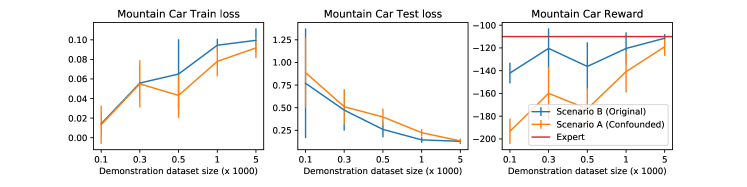
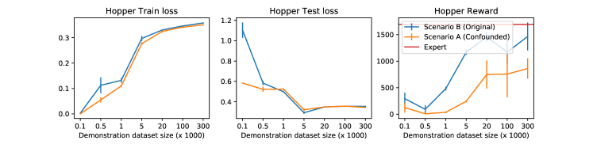
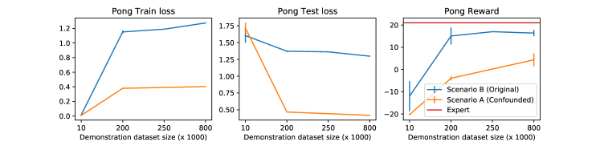
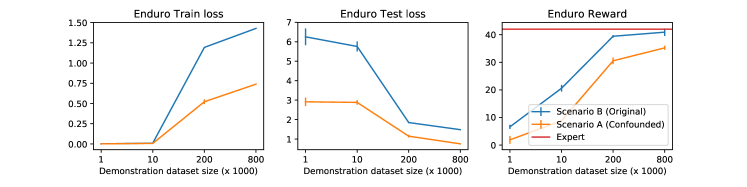
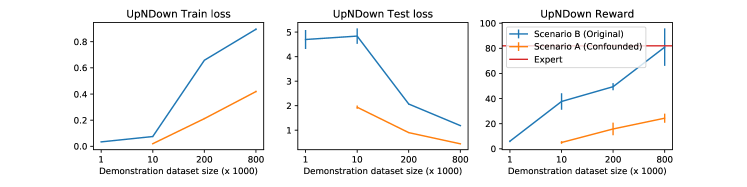
그림 11에서 우리는 여러 환경에서의 인과적 오식별을 보여준다. 행동 복제의 학습 및 검증 손실은 원래 정책과 혼란 요인이 있는(confounded) 정책 모두에서 빈번하게 0에 가깝지만, 혼란 요인이 있는 정책을 환경에 배포했을 때 일관되게 현저히 낮은 보상을 생성함을 관찰할 수 있다. 이는 인과적 오식별 문제를 확인해 준다.
부록 F 훨씬 더 많은 개입을 적용한 DAgger
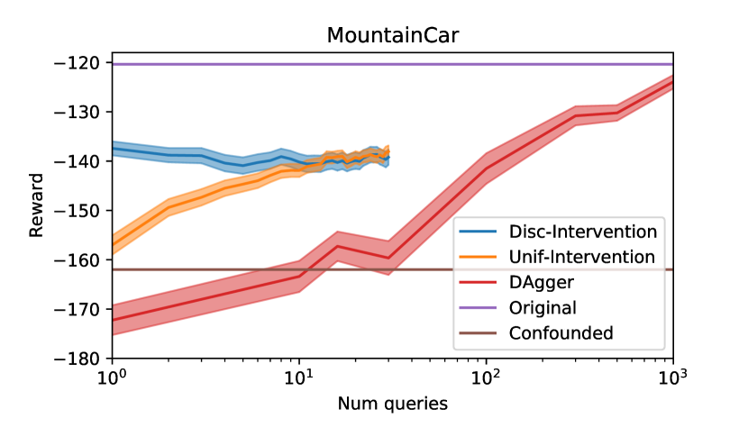
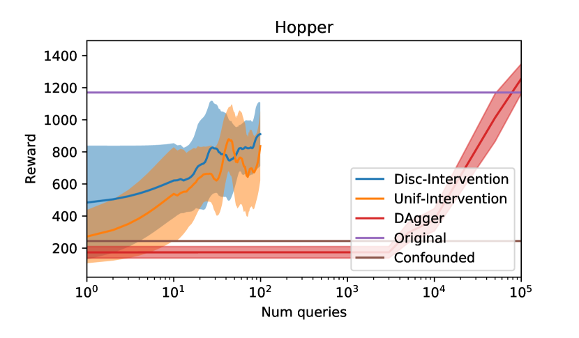
본 논문에서는 DAgger가 제안하는 방법과 동일한 횟수의 전문가 개입을 가졌을 때 성능이 저조함을 보였다. 그렇다면 잘 작동하기 위해서는 얼마나 많은 샘플이 더 필요할까?
그림 12의 결과는 DAgger가 원래 상태(original state)에서 학습된 비-DAgger 모방자(non-DAgger imitator)가 달성한 보상에 필적하는 보상에 도달하기까지 수백 개의 샘플이 필요함을 보여준다.
부록 G GAIL 학습 곡선
그림 13에서는 원래 상태와 혼란 상태에서의 GAIL 평균 학습 곡선을 보여준다. 오차 막대는 평균의 표준오차(standard error of the mean) 2배이다. 혼란 상태와 원래 상태의 학습 곡선은 유의미한 차이를 보이지 않으며, 이는 인과적 혼동(causal confusion)이 GAIL에서는 문제가 되지 않음을 나타낸다. 그러나 학습을 위해서는 환경과의 매우 많은 상호작용이 필요하다.
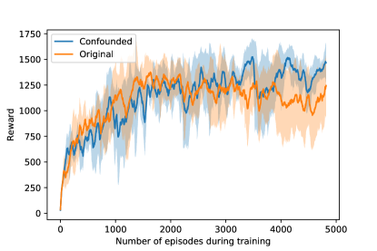
부록 H 강화학습으로서의 개입 사후 확률 추론
특정 그래프 이 최적일 우도(likelihood) 를 평가하는 방법과 사전 확률(prior) 가 주어졌을 때, 우리는 사후 확률(posterior) 를 추론하고자 한다. 그래프의 수는 유한하므로 이 사후 확률을 정확하게 계산할 수 있다. 그러나 그래프의 수가 매우 많을 수 있어, 비현실적으로 많은 우도 평가가 필요할 수 있다. 정책 실행을 통한 개입의 경우처럼 보상에 노이즈가 있는 상황에서는 우도로부터 노이즈가 섞인 샘플만 얻을 수 있으므로 이 문제가 더욱 악화된다.
반면에 정책에 특정 구조를 가정하면, 정책을 더 이상 정확하게 추론할 수 없더라도 샘플 효율성을 극적으로 향상시킬 수 있다. 이는 변분 추론(Variational Inference) 프레임워크에서 수행될 수 있다. 특정 변분 분포군(variational family)에 대해, 어떤 온도(temperature) 에 대해 다음을 찾고자 한다:
| (4) | ||||
| (5) |
우리가 가정하는 변분 분포군은 독립 분포들의 군(family of independent distributions)이다:
| (6) |
식 5은 보상이 [27]인 1단계 엔트로피 정규화 MDP(entropy-regularized MDP)로 해석될 수 있다. 이는 정책 경사법(policy gradient)을 통해 최적화할 수 있지만, 이 경우 많은 우도 평가가 필요할 것이다. 더 효율적인 방법은 가치 기반 방법(value-based method)을 사용하는 것이다. 독립성 가정은 선형 Q 함수 로 변환되며, 이는 오프-정책 쌍(off-policy pairs) 에 대한 선형 회귀(linear regression)를 통해 간단히 학습될 수 있다. Soft Q-Learning [16]에서는 식 5을 최대화하는 정책이 임을 보여주며, 이는 우리의 경우 식 6과 일치함을 보일 수 있다: